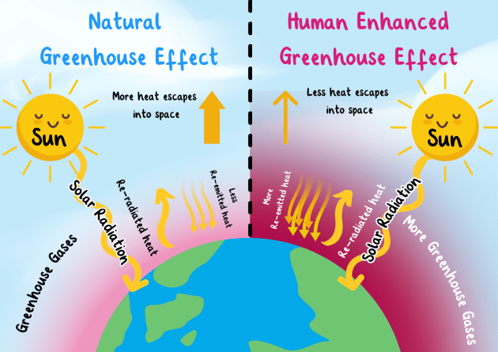

What is the Definiton of Greenhouse Gases?
Greenhouse gases, commonly referred to as 'GHGs,' are gases present in Earth's atmosphere that trap heat. They allow sunlight to enter but prevent some heat from escaping, similar to the function of a greenhouse.
Main Greenhouse Gases
- Carbon Dixoide (CO2): Released by burning fossil fuel such as oil, gas and coal.
- Fluorinated Gases: Man-Made gases primarily used in industrial processes, refrigeration, and various consumer products.
- Nitrous Oxide (N20): Are emissions are released through agricultural practices, especially fertilizer application, industrial activities, and the burning of fossil fuels and solid waste.
- Sulphur Hexafluoride (SF6): Is asynthetic gas primarily used for insulating electrical equipment, it is also a potent greenhouse gas. This gas is colorless, odorless, non-toxic, and non-flammable.
What Can You Do??
Reducing your carbon footprint can make a significant difference. Conserve energy, choose a more plant-based diet, drive less, and support clean energy initiatives!